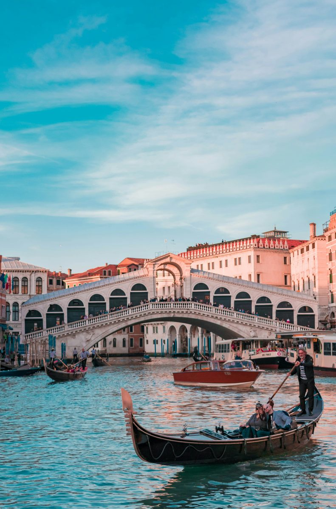

From the oldest market in the city to the church built to thank God it survived. No app. No group. No booking. First 3 stops free.
From the oldest market in the city to the church built to thank God it survived. Under three kilometres. A little over a thousand years of history.
Check out our other
Italian city tours
Leave a quick review. It helps other travellers find us and means a lot.
♥ Thank you so much. We'll read it and add it to the site shortly.
You have seen what this tour is like. The next 6 stops go further. €4.99, yours to keep forever.
Unlock Full Tour - €4.99Payments powered by Lemon Squeezy & Stripe